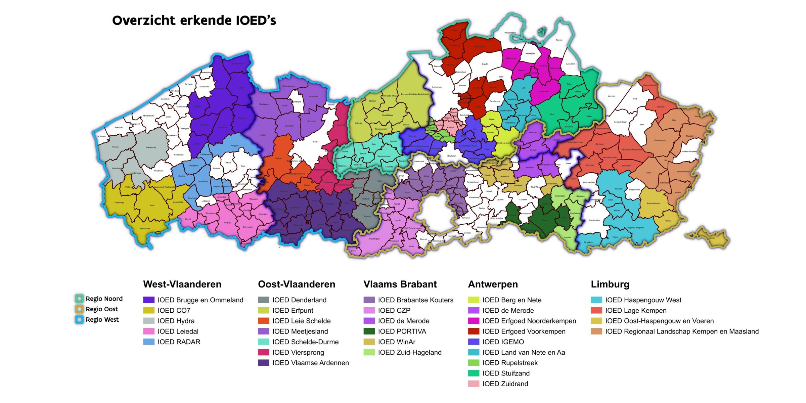

Gratis pre-advies · Lokaal aanspreekpunt
Voordat u een architect inschakelt of een vergunning aanvraagt, kunt u gratis terecht bij uw Intergemeentelijke Onroerenderfgoeddienst voor een eerste inschatting van wat haalbaar is voor uw historisch gebouw.

Overzicht van alle erkende IOED's in Vlaanderen per regio. Bron: Agentschap Onroerend Erfgoed.
Als eigenaar van een historisch gebouw bent u waarschijnlijk niet de enige die zich afvraagt wat nu eigenlijk mogelijk is bij een renovatie. Welke ingrepen zijn aanvaardbaar? Dit zijn precies de vragen waarvoor u bij uw IOED terechtkunt, en dat volledig gratis.
De IOED geeft pre-advies in een vroeg stadium, nog vóór de formele vergunningsaanvraag wordt ingediend. Zo weet u op voorhand wat haalbaar is en vermijdt u onaangename verrassingen later in het traject.
De IOED geeft een niet-bindend vooradvies over welke ingrepen aanvaardbaar zouden zijn voor uw specifiek pand. Ze kennen de lokale erfgoedcontext.
De IOED voert plaatsbezoeken uit om uw pand te bekijken en de erfgoedwaarden ter plaatse te beoordelen.
De IOED staat in contact met eigenaars, architecten, gemeenten en erfgoedconsulenten en helpt u de juiste mensen te vinden.
Niet elke gemeente heeft een eigen IOED. Zoek via het officiële overzicht welke IOED actief is in uw gemeente.
Contacteer de IOED zo vroeg mogelijk, nog voor u een architect inschakelt. Breng mee: adres, beschermingsstatus en een beschrijving van uw plannen.
Leg uw plannen voor. De consulent geeft een eerste inschatting van wat erfgoedkundig aanvaardbaar zou zijn.
Op basis van het pre-advies kunt u met meer zekerheid een architect of aannemer inschakelen.
Het agentschap Onroerend Erfgoed publiceert een volledig en actueel overzicht van alle erkende IOED's in Vlaanderen, met per IOED de aangesloten gemeenten en contactgegevens.
Op de website van Onroerend Erfgoed vindt u meer informatie over de werking van IOED's en hoe u contact kan opnemen met de juiste dienst voor uw gemeente.
Klaar voor de volgende stap?